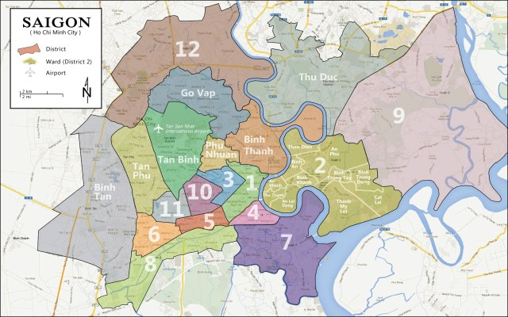

Một VAS, sáu điểm đến.
Tìm ngôi trường phù hợp nhất với hành trình của con. Mỗi cơ sở có một không gian, một cộng đồng và một nhịp sống riêng — cùng chia sẻ một triết lý giáo dục thống nhất.
Tìm cơ sở phù hợpTìm cơ sở cho con.
Ba câu hỏi ngắn để bắt đầu từ điều gia đình quan tâm nhất: cấp học, khu vực và cách con sẽ lớn lên mỗi ngày.
Sáu điểm đến trong một thành phố.
Chọn một điểm trên bản đồ để xem nhanh cấp học, vị trí và cá tính của từng cơ sở.

Mỗi cơ sở một cá tính.
Không phải cơ sở nào “tốt hơn”. Điều quan trọng là tìm đúng môi trường cho nhịp học, nhu cầu và tương lai của con.
Chọn nơi con sẽ lớn lên.
Những tiêu chí phụ huynh thường cần nhìn thấy trước khi chọn một chuyến tham quan.
| Cơ sở | Khu vực | Cấp học | Điểm nổi bật |
|---|
Mỗi ngày ở VAS có nhiều hơn một lớp học.
Từ phòng lab đến sân thể thao, từ nghệ thuật đến những khoảng xanh — không gian là một phần của cách con học và trưởng thành.
Những điều cần biết trước khi chọn.
Cơ sở nào có cấp học của con?
Sala, Riverside, Garden Hills và Sunrise đào tạo từ Mầm non đến THPT. Hoàng Văn Thụ và Ba Tháng Hai hiện tập trung từ Tiểu học đến THPT theo dữ liệu cơ sở được dùng trong redesign này.
Các cơ sở có cùng chương trình không?
Các cơ sở cùng chia sẻ triết lý giáo dục và hệ thống chương trình của VAS. Mỗi cơ sở có thể khác nhau về quy mô, không gian, tiện ích và cộng đồng học sinh.
Có xe đưa đón học sinh không?
VAS có dịch vụ xe đưa đón tại một số cơ sở và tuyến đường. Gia đình nên xác nhận tuyến, điểm đón và điều kiện áp dụng khi đăng ký tư vấn.
Có thể tham quan cơ sở trước khi đăng ký không?
Có. Một chuyến tham quan giúp gia đình nhìn thấy lớp học, không gian sinh hoạt và nhịp sống thực tế. Hãy gửi nhu cầu qua form tư vấn để đội ngũ sắp xếp.
Có thể chuyển cơ sở sau khi nhập học không?
Gia đình có thể trao đổi với bộ phận tuyển sinh về khả năng chuyển cơ sở theo cấp học, chỗ trống và yêu cầu của chương trình tại thời điểm chuyển.
Đến và cảm nhận VAS.
Một chuyến tham quan có thể giúp gia đình hình dung rõ hơn nơi con sẽ học tập, vui chơi và trưởng thành mỗi ngày.